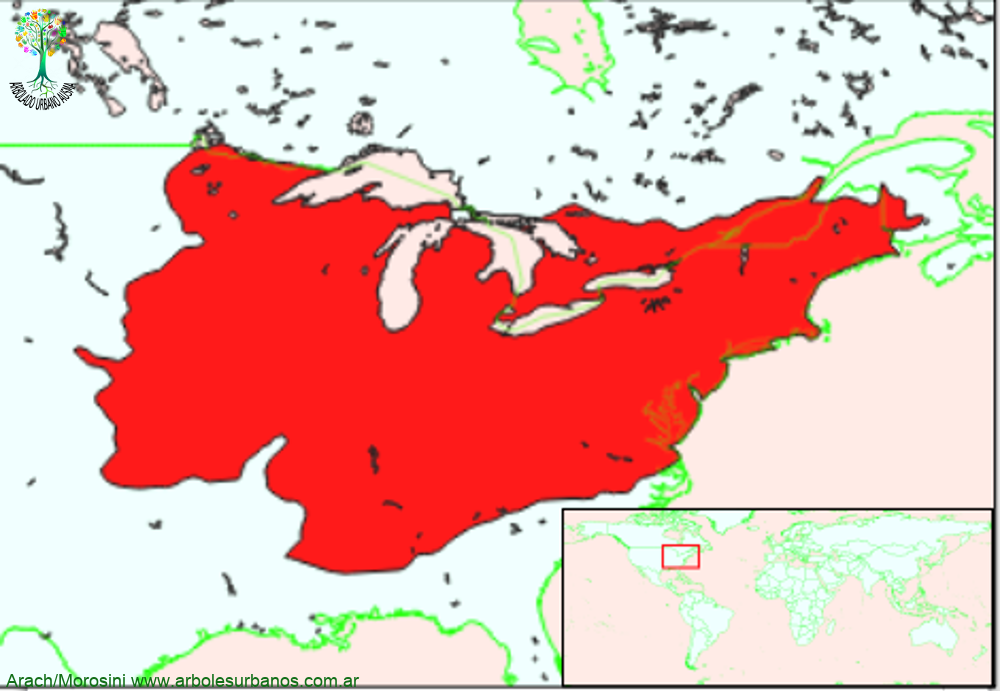

Click en las imágenes para ampliar

{kind=link}
{kind=link}
{kind=link}
- NOMBRE CIENTÍFICO
- Quercus rubra
- FAMILIA BOTÁNICA
- Fagáceas
- DESCRIPCIÓN GENERAL
- Esta especie en los lugares de origen, alcanza entre los 20 a 30 metros de altura. Posee un tronco recto y columnar rematado por una amplia copa. Su corteza es de color grisáceo y textura lisa, en las plantas jóvenes; en los árboles adultos tienen corteza parda oscura profundamente surcada longitudinalmente. Sus hojas son simples, de forma oblonga, de un largo de hasta 20 cm. de largo y 15 cm. en su parte más ancha, tienen lóbulos finamente dentados en sus bordes. Su color es de un vistoso amarillo, cuando recién empiezan a salir, luego se tornan verde oscuras en el haz y de un verde más pálido en el envés; en el otoño pasan a tonos rojizos y ocres, persisten en la planta hasta casi el comienzo de la primavera, donde las cambia en su totalidad.
- FLORES
- Las flores femeninas aparecen en las axilas de las hojas nuevas, separadas de las flores masculinas, ambas en forma de amentos colgantes, de color verde amarillento. Aparecen a principios de la primavera.
- FRUTOS
- Los frutos maduran desde fines de marzo a mediados de mayo, son bellotas de color marrón y miden hasta 2 cm. de largo, están cubiertas por una breve cúpula, tardan dos años en madurar.
- ORIGEN
- Esta especie tiene un área de dispersión natural que abarca, desde la costa atlántica de Canadá y Estados unidos, hasta el centro de Norteamérica.
- USOS
- Si bien su madera es dura, es poco durable, por lo cual se la ha utilizado como combustible. En otros tiempos se utilizaba su corteza como curtiente por la gran cantidad de taninos que contiene.
- REPRODUCCIÓN
- La multiplicación es, comúnmente, por semillas, estas deben conservarse a una temperatura de 4 Cº en frío.
- PARTICULARIDADES
- Las mejores cantidades de semillas se producen en intervalos de 2 a 5 años. Esta especie se híbrida naturalmente con varios robles con los que comparte su área de distribución natural, como por ejemplo: el Roble de los pantanos (Quercus palustris), el Roble de Maryland (Quercus marilandica), el Roble de hojas de sauce (Quercus phellos) y el Roble negro (Quecus velutina)
Roble rojo del norte